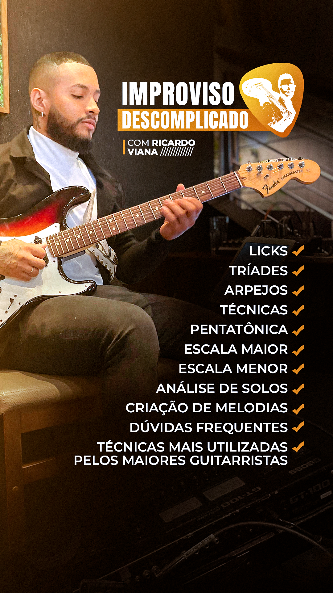

Aprenda a improvisar de forma simples e objetiva
Olá! Me chamo Ricardo Viana. Trabalho com música profissionalmente desde 2015.Comecei aos 7 anos, com a ajuda de minha tia. Logo após ganhei meu primeiro violão aos 9 anos. Me apaixonei pela guitarra e comecei a estudar aos 10 anos. Sempre gostei do improviso e dá guitarra virtuosa. Me especializei no improviso e nas suas diversas possibilidades de criar frases e motivos melódicos.

Clique abaixo e saiba mais
INSTAGRAM
DOPPUS